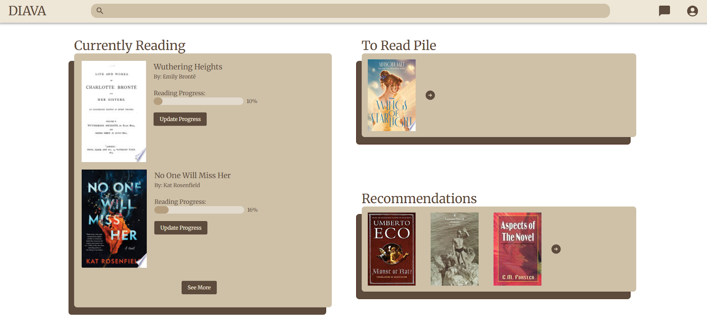
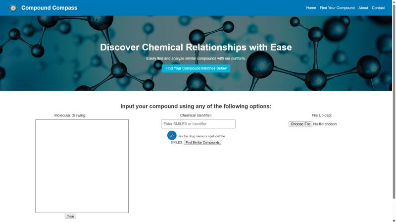

Anita Prova
The sections below highlights my experience in computer science. I have included relevant courses, past experince, and personal projects.
The sections below highlights my experience in computer science. I have included relevant courses, past experince, and personal projects.
Anita's Spell Book Flip if you dare

Diava aims to be the go-to platform for book lovers by integrating gamified features and social engagement tools. We want to provide a motivating way for users to track their reading progress while fostering a vibrant community. By making reading more interactive, we aim to encourage people to read consistently and engage deeply with their books.
Technologies: React.js, Supabase, Hugging Face, Tailwind CSS
Links: GitHub

Our web app takes a SMILES string, extracts the scaffold, and performs similarity analysis to find similar compounds. In addition, it can take voice commands and return the corresponding SMILES string.
Technologies: Python, RDKit, HTML, CSS, Flask
Links: GitHub

We developed a machine learning model from scratch for image restoration, utilizing UNET to deblur, denoise, and brighten images, restoring them to their original quality.
Technologies: Python, Tensorflow, Streamlit, NumPy, Pandas

We created a chatbot made for and by Hunter students. It will give students in-depth accurate information on mental health, food assistance, housing initiatives, and more quickly, efficiently, and accurately. By simply asking the chatbot any question regarding resources, students can receive answers almost instantaneously without the extra clicks and tabs.
Technologies: React.js, Express.js, Python, Gemini API, HTML, CSS

This project was a collaborative effort with a team of four members for the CUNY hackathon. Over the course of three days, we employed technologies such as HTML, CSS, React, JS, LeafLet, and Google OAuth. The web app aims to provide an immersive exploration of New York City's diverse neighborhoods, highlighting their cultural richness and heritage. I utilized React and Leaflet to create an interactive map experience for users.
Technologies: HTML, CSS, React, JS, LeafLet, Google OAuth

Over the course of 10 weeks, as part of my final project for the Intermediate Web Development Course at Codepath, I designed and developed a website using React where users can discuss their favorite video games. The website includes features such as user posts, where users can create, edit, and delete their posts, a commenting system allowing users to comment on posts made by others, and filtering options to sort posts by most popular and by time.
Technologies: React
Links: GitHub
This project was a collaborative effort with a team of three members over the course of one month. We employed technologies such as SvelteKit, Google Firebase, Google Firestore, Vite, HTML, CSS, and JavaScript. The application utilized Google Books APIs to facilitate search functionalities. I led the implementation of front-end components using SvelteKit and styled the application with CSS. The project was showcased at Codefest 2024 and was a part of a Google mentorship program, where we received guidance from industry experts to improve our technical skills and project management abilities.
Technologies: SvelteKit, Google Firebase, Google Firestore, Vite, HTML, CSS, JavaScript
Links: GitHub

Hello! I am a student at Hunter College pursing computer science. I have knowledge of C++, Java, JavaScript, CSS, HTML, and React. I am interested in learning about web development and mobile app development. I'm excited to learn more about the computer science field!
Fun Fact: I'm a huge bookworm!
Want to reach out? Here are my platforms below!